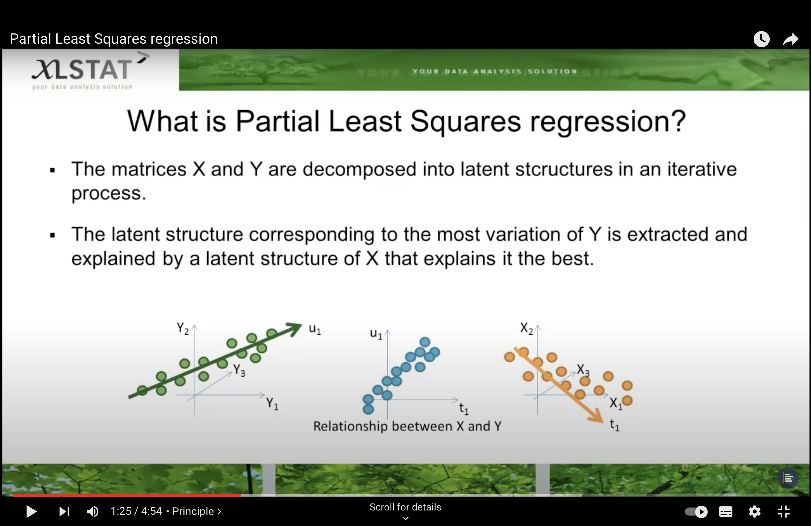
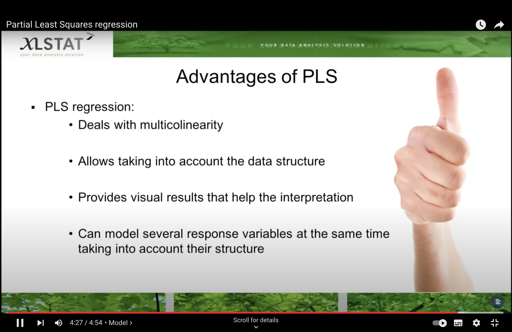
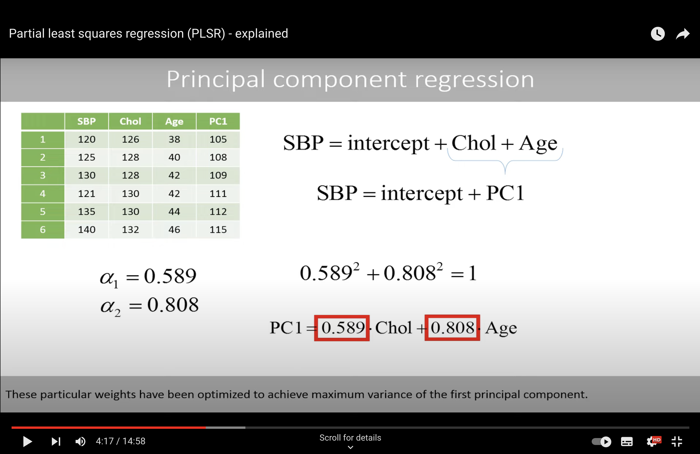
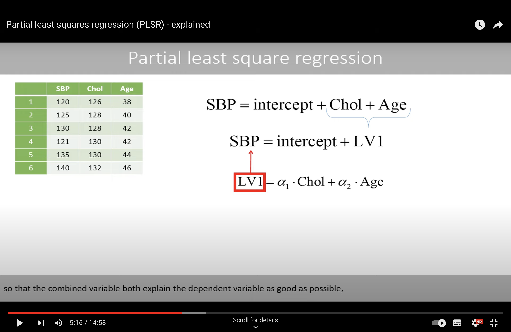
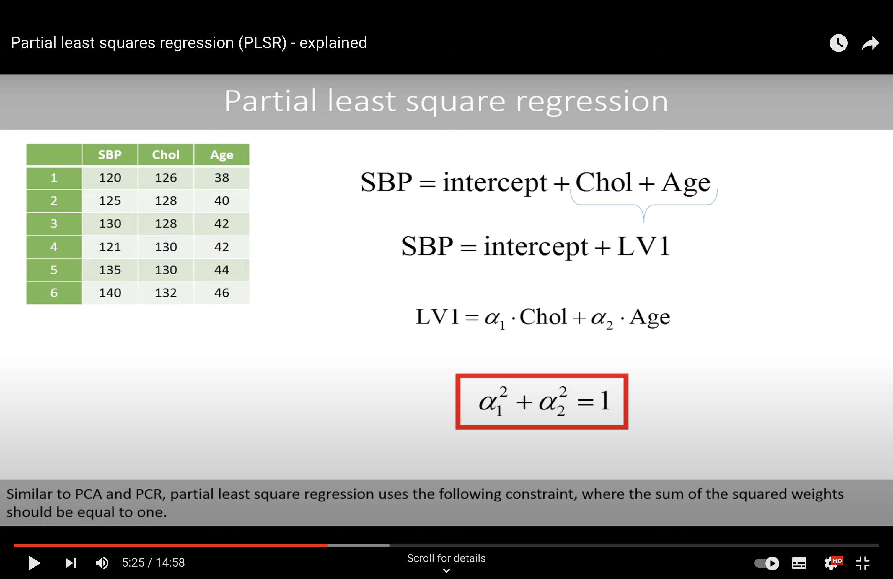
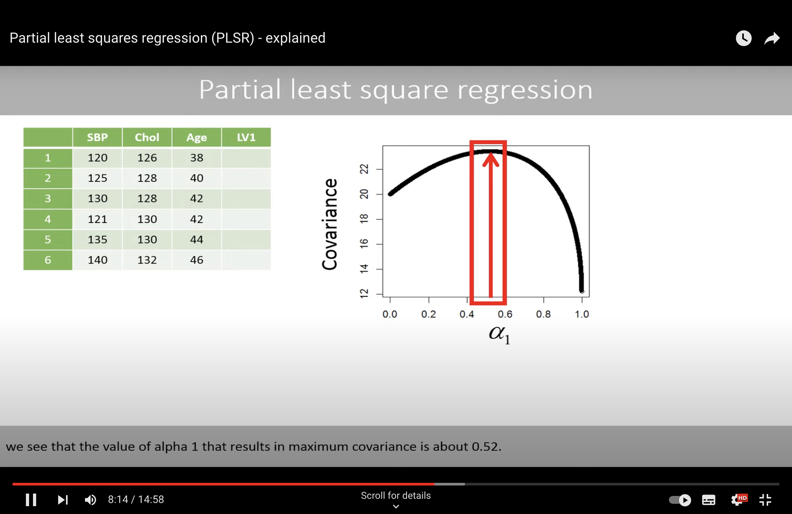

week 6 additional resources#
OLS and least-squares estimates#
PLS#
{kind=link}
PLS Algorithm#
In Partial Least Squares (PLS) regression, the general procedure involves two main steps:
Identifying the Projection \( \phi \):
The first step is to find the projection vectors (or loadings) \( \phi \) that maximize the covariance between the predictors \( X \) and the response \( Z \). These projection vectors define the PLS components.
Specifically, the algorithm seeks to find a matrix \( \Phi \) such that when you project \( X \) onto \( \Phi \), you get new components \( T = X\Phi \) that have maximum covariance with the response \( Z \). This is typically done through an iterative process that maximizes the covariance between \( X \) and \( Z \) while also considering the explained variance in \( X \).
Estimating the Coefficients \( \beta \):
Once you have the PLS components \( T \), the next step is to use these components to estimate the regression coefficients \( \beta \). This is typically done through a simple linear regression of \( Z \) on \( T \), since the components are chosen to be good predictors of \( Z \).
The final regression model in PLS is usually of the form \( Z \approx T\beta \), where \( T \) is the matrix of PLS components. Because these components are linear combinations of the original predictors \( X \), the model can also be expressed in terms of the original predictors, resulting in an equation like \( Z \approx X\Phi\beta \).
The power of PLS comes from the fact that the components \( T \) are constructed specifically to capture the information in \( X \) that is most relevant for predicting \( Z \), which often allows PLS to perform well even when there are many predictors, and they are highly collinear.
Advantage of PLS#
{kind=link}
PCR and PLS#
Below are notes for Partial least squares regression (PLSR) - explained
PCR#
{kind=link}
These particular weights have been optimized to achieve maximum variance of the first principal component.
We see that the variable age has a higher weight, which means that more weight is put on this variable when combining the two variables to get as much variance as possible in the combined variable.
However, this does not necessarily mean that this variable is better to predict the systolic blood pressure.
PLS#
T he combined variable both explain the dependent variable as good as possible, but also explain the explanatory variables in a good way.
 {kind=link}
{kind=link}
Algorithm to find the best parameter?
SIMPLS
We find the best alpha (phi) in an iterative way.
{kind=link}
With best alpha, we will use LS method to find the best parameters.
Comparison#
Comparison between PCR (Principal Component Regression) and PLS (Partial Least Squares) in a tabular format:
Aspect |
PCR (Principal Component Regression) |
PLS (Partial Least Squares) |
|---|---|---|
Objective |
Reduce dimensionality before regression. |
Maximize the covariance between responses and predictors. |
Method |
Decomposes predictors into principal components and regresses on these. |
Finds new components by projecting predictors and responses together. |
Components |
Principal components are orthogonal. |
PLS components are not strictly orthogonal (but can be in some methods). |
Variable Selection |
All variables are kept, but some principal components may be excluded. |
Variables are selected based on their relevance to the response. |
Response Variables |
Typically one response variable. |
Can handle multiple response variables simultaneously. |
Predictor Collinearity |
Effective in dealing with multicollinearity. |
Specifically designed to handle multicollinearity. |
Dimensionality |
Can handle high-dimensional data but does not consider response variable. |
Reduces dimensionality while considering the response variable. |
Interpretability |
Less interpretable due to transformation into principal components. |
More directly interpretable in terms of original variables. |
Model Complexity |
Can be simpler as it does not consider the response in component creation. |
Generally more complex due to simultaneous projection of predictors and response. |
Application |
Used when the focus is on explaining the variance in the predictors. |
Used when the focus is on prediction and explaining the covariance. |
Both PCR and PLS are used for regression in high-dimensional spaces where traditional regression would fail due to multicollinearity. PCR focuses on explaining the variance within the predictors, while PLS focuses on the covariance between predictors and responses. This makes PLS typically more suited for predictive models where the goal is to predict the response variable(s).
{kind=link}